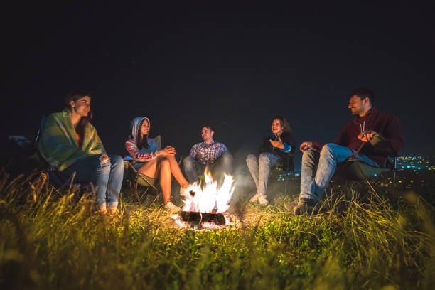

We make Life-Long Stories here at Dry Oar
Reviews
Dry Oar is some of the best in the country, and Salmon River rafting trips are something special. Explore a place on the map that has barely changed since Lewis and Clark first hiked through its forests and mountains. Wildlife such as elk, bear, moose, otters, beavers, and even wolves roam the surrounding hills. Whether you choose a rafting trip on the Main Salmon River, the longest undammed river in the United States, or opt for the 100-mile Middle Fork trip, you can expect impossibly clear water and exhilarating rapids. Everyone can relax on warm, white sand beaches, and absorb the solace of nature, swim in clear, calm eddies, and sleep under the bright, starry sky or put up your tent beneath a stand of fragrant, cool pines. Holiday has partnered with Middle Fork River Expeditions (MFRE) to offer these amazing trips. MFRE’s owner, James Ellsworth, is a former Holiday guide who has been running safe, quality river trips in Idaho for over 20 years. MFRE itself has been in business for over 60 years. We’re proud to partner with a company that shares our same values. Enjoy gourmet food, world-class scenery, and superb service on a Salmon River rafting trip this season! Not convinced? Check out what previous guests have to say below!
___________________________________________________


Our Dry Oar Trip Was The Perfect Balance of Relaxation and Excitement. Thanks for the great help from everyone, and when there was a slight change in plans, I felt totally taken care of! Loved the rental gear, that was the biggest tent I’ve ever slept in – bigger than my bedroom in NYC (not kidding) Our guides Molly and Russ were absolutely fabulous; fun, professional, and set a joyful tone for the trip. The food was abundant and delicious, thanks for accommodating my vegetarian needs. The trip was tremendous fun – the perfect balance of relaxation and excitement. All of our needs were totally anticipated and taken care of, I don’t think I’ve smiled this much in years.
___________________________________________________
Our guide’s energy was unbelievable on this trip! Our family of five had a wonderful time rafting the Lower Salmon River Trip with Holiday River Expeditions! Everything was better than what we expected! Our weather was beautiful and the scenery was spectacular! The guides made the trip even more fun. We are inexperienced campers, but after three nights on the river, we felt very comfortable with our surroundings and our abilities. The highlight of the trip was seeing the wildlife on the shore. We saw beautiful birds including bald eagles and herons, big horned sheep and even a bobcat! The guides were terrific. Russ, Shelby, Pete, Molly, and Steve were extremely knowledgeable about the river. They made the rapids exciting, but we always knew that safety was the top priority. Their energy was unbelievable. After a full day on the river, they helped us unload the boats, set up tents, cooked us dinner, and even played games with the kids… always with a smile and a happy attitude. They made the trip even more fun! We will definitely look into another trip with Holiday in the future!
___________________________________________________
Russ, Molly, and Mike are each incredible people — they created a really fun and safe experience that we will all remember forever. My husband and I arrived pretty tired from our working lives…we left feel relaxed and regenerated. My whole family has talked often of this trip — we absolutely loved our time on the river with Russ, Molly, and Mike. Although I wasn’t expecting the fun bag of costumes! The last night of gifts was great — funny and heartwarming. Thanks. The food was incredible! Thank you!!
___________________________________________________